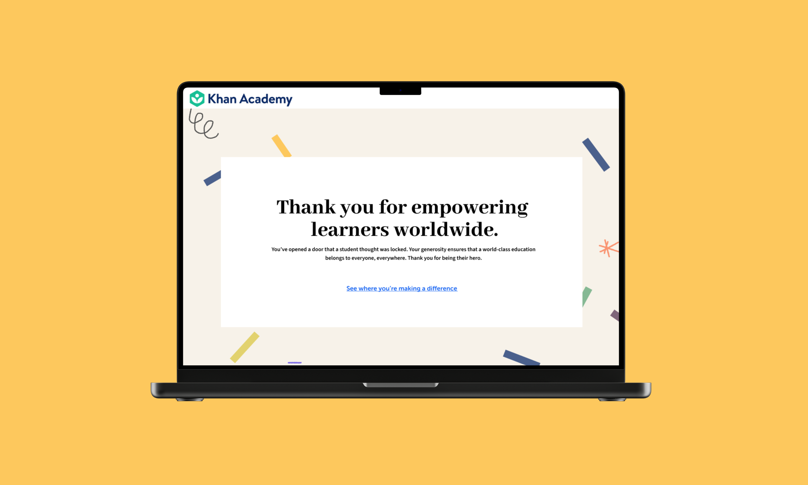
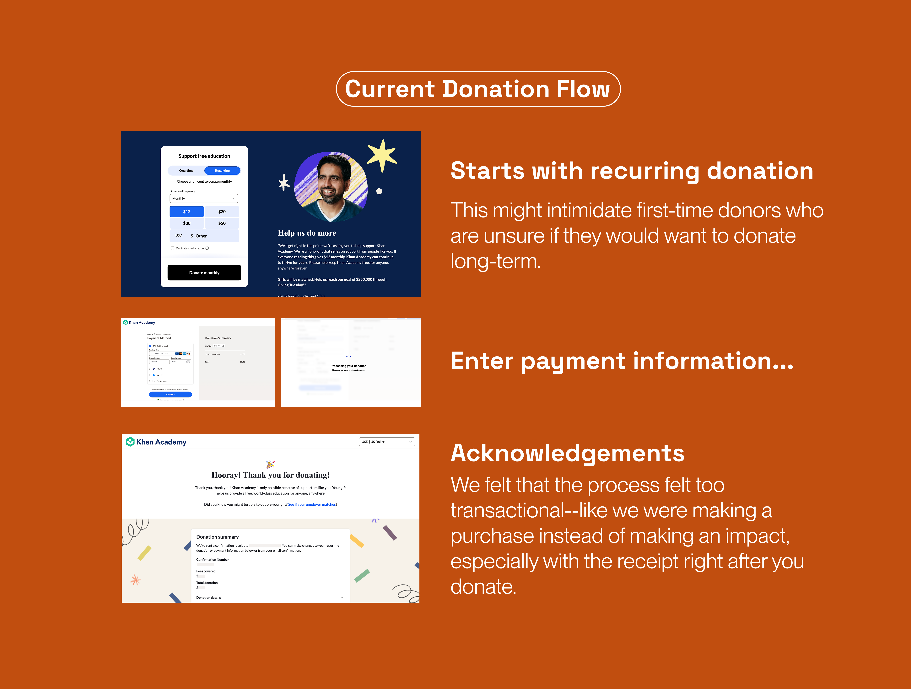
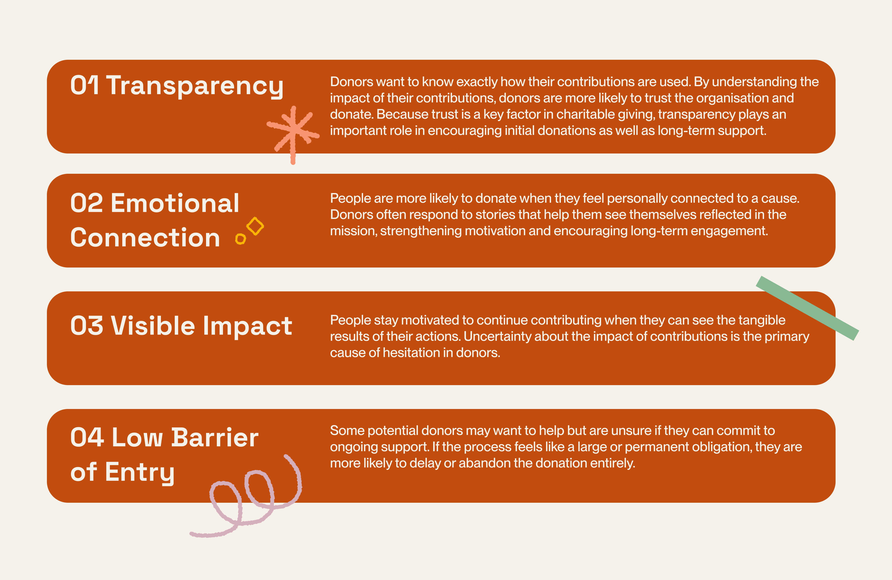
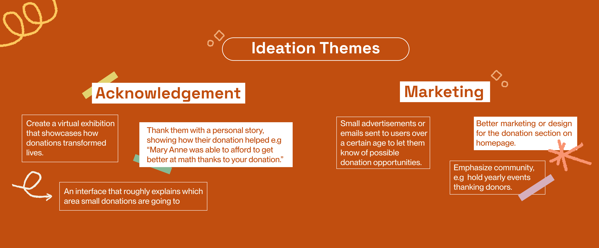
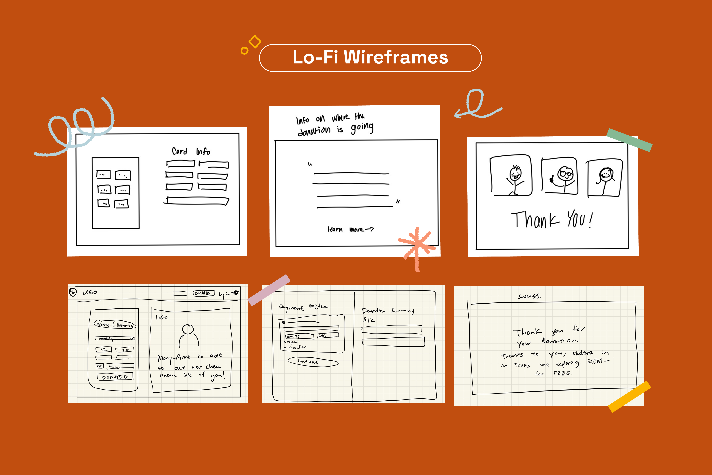
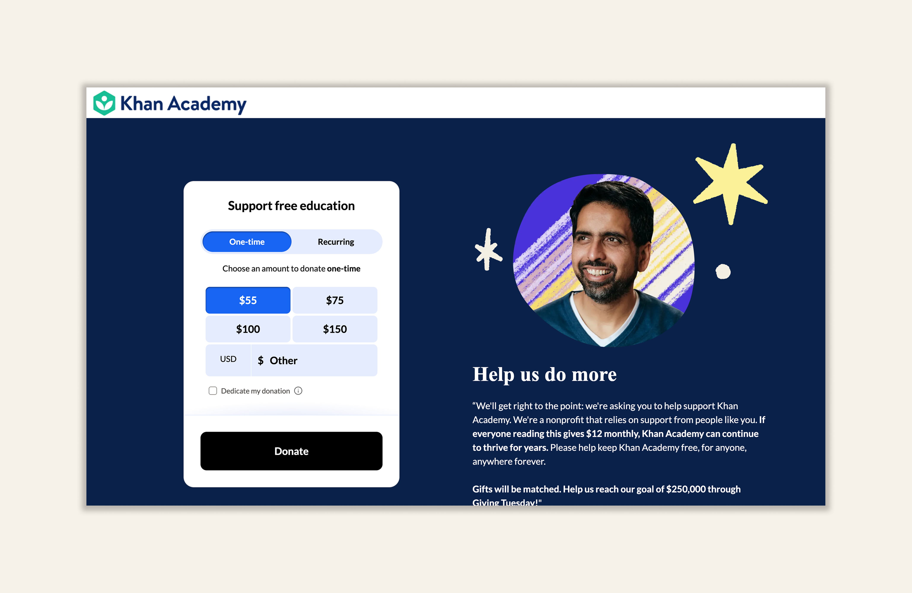
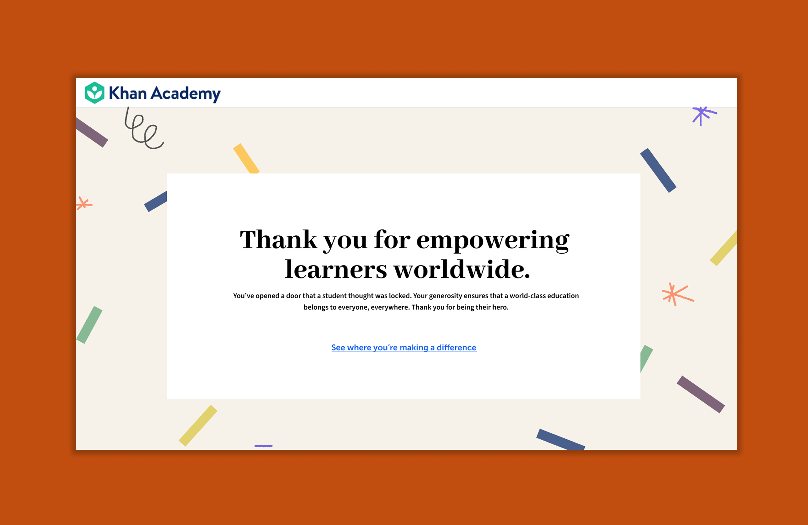
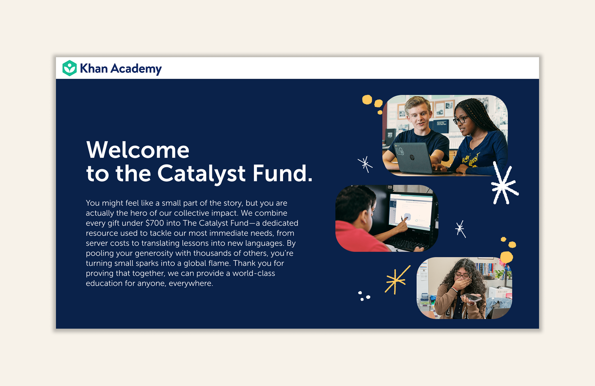
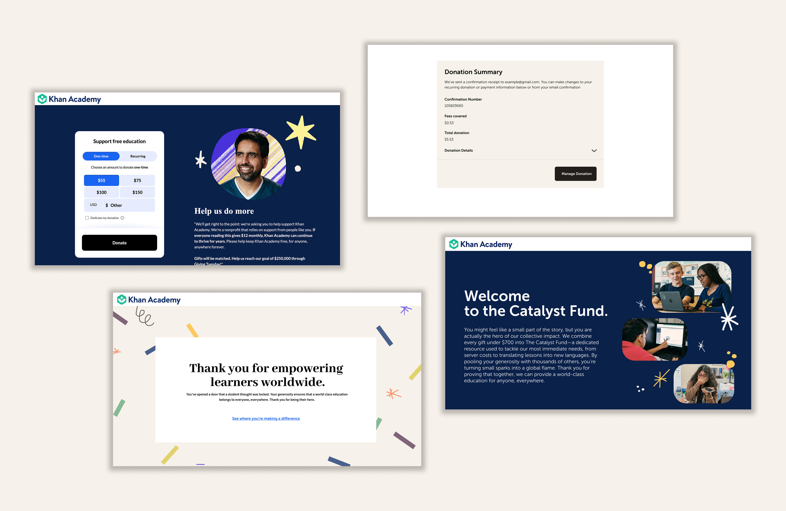

01 Overview
A redesigned donation flow for Khan Academy that allows donors to see exactly how their donation makes a tangible impact.
As part of Design For America’s IDEA program, we were tasked with redesigning
Khan Academy’s donation flow. The organization is powered mainly by donations
and volunteers, underscoring the importance of donor flows to Khan Academy’s mission.
This project investigates what motivates and incentivizes donors to support free education.
02 Context/Problem
Many potential donors hesitate because they are uncertain about where their contributions go or they assume that Khan Academy already has enough funding from big sponsors.
The existing experience felt too transactional and failed to evoke feelings of empathy or warmth. Without clear donor reassurance, the organization misses out on the small or one-time contributions essential for maintaining high-quality learning.

How might we reassure one-time or recurring donors
that their contributions make a difference?
03 Research
Through secondary research, we wanted to find out:
- What motivates and incentivizes donors to support free education?
- What non-financial barriers prevent users from donating?
- How much trust do donors have in nonprofits and how does that influence their donations?
We identified four factors that most heavily impacted whether people donate.

These insights will guide our next steps as we explore ways to design a more engaging and transparent donation experience for Khan Academy.
04 Process
Low-fidelity designs and early ideation sketches were used to quickly explore different directions, allowing us to iterate on structure, flow, and interaction concepts before refining the final experience.


Lowering the barrier to entry
Instead of prompting users toward long-term commitments, we defaulted to a one-time donation rather than recurring contributions.
This reduces pressure for first-time donors who may feel intimidated by ongoing commitments. By offering clear, flexible options, the experience feels more approachable and encourages initial participation.


Meaningful Acknowledgement
We redesigned the donation flow to include immediate, emotionally engaging feedback after a contribution is made.
Instead of showing a receipt first, users are greeted with a thank-you page upon completion, reinforcing appreciation and emotional connection. The receipt is still accessible, but placed after scrolling, allowing the initial experience to feel more human rather than transactional.
Transparent Impact Page
We introduced a dedicated transparency page that clearly shows where donations go and the impact they create or have created in the past. This allows both prospective and current donors to see where their contributions are used towards.
By making impact visible and specific, the experience becomes more human and emotionally meaningful, rather than feeling like a transactional exchange. This builds trust and encourages continued support.

05 Solution

06 Conclusion
Our redesign increased donor reassurance and reduced hesitation by replacing a transactional feel with one that builds trust and empathy.
Reflection
- This was my first UX project and my first time working in a team-based design environment. Our team faced challenges such as shifting team members and uneven workload distribution, which required us to adapt quickly while staying on track for our deadline.
- This project highlighted the importance of clear communication, setting internal deadlines, and definitely improved my problem solving skills both in design and in working in a group.
- Miscommunication and differences in skill levels limited our ability to fully execute some of our more ambitious ideas, resulting in a less complex redesign than initially envisioned.
- Moving forward, I would explore incorporating features like community recognition to further enhance user engagement and motivation.